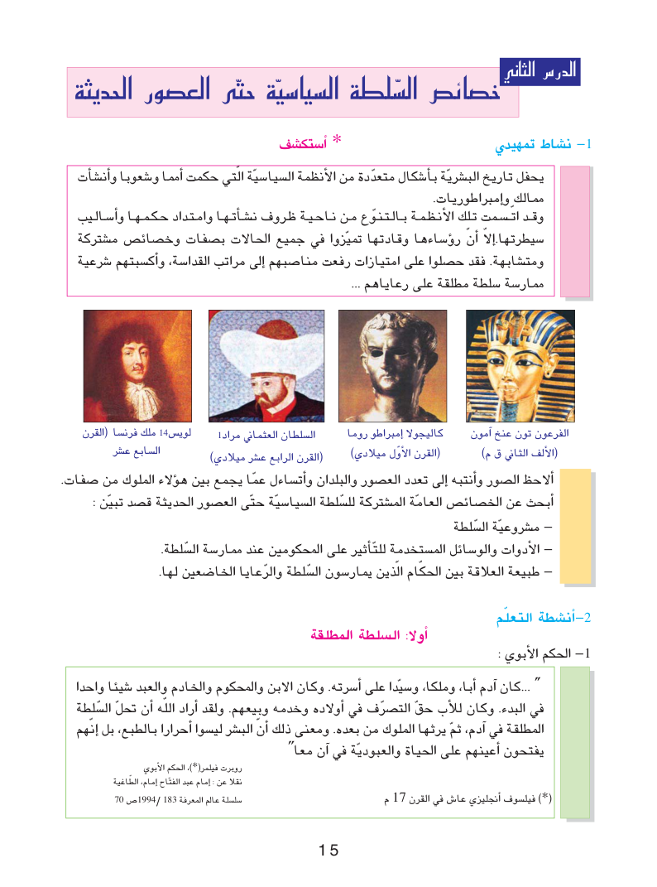

التربية المدنية | السنة الثانية ثانوي
الدرس الثاني: خصائص السلطة السياسية حتى العصور الحديثة
ثلاثة ملفات تاريخية، ثلاث محاكمات للأدلة، ومنافسة بين الفرق. اختر واجهتك للبدء.
دخول الأستاذ ←دخول التلاميذ ←
أوّلًا: السلطة المطلقة
من يملك القرار؟ وكيف تُمارس السلطة؟
ثانيًا: ارتباط المؤسسة السياسية بالمؤسسة الدينية
الملك المتألّه والحقّ الإلهي والعلاقة العمودية.
ثالثًا: غياب المواطنة وإقصاء الشعب عن السلطة
الرعيّة، الحقوق السياسية، وقمع المعارضة.
افتتاحية سينمائية
مشاهد مُنتَجة بالذكاء الاصطناعي لأغراض تعليمية، وليست تسجيلات أو وثائق تاريخية أصلية. السندات الأصلية من الكتاب المدرسي تظهر في مراحل اللعبة.